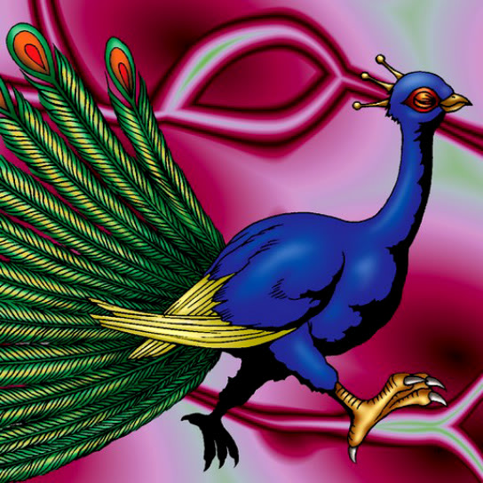

Peacock

STATS
ATK: 1700
DEF: 1500DECK COST
Deck Cost per Card: 32Fusion List (6 Possible Fusions)
- Peacock + Fire Eye = Crimson Sunbird
- Peacock + Fire Kraken = Crimson Sunbird
- Peacock + Flame Swordsman = Crimson Sunbird
- Peacock + Metal Dragon = Crimson Sunbird
- Peacock + Peacock = Crimson Sunbird
- Peacock + Vermillion Sparrow = Crimson Sunbird